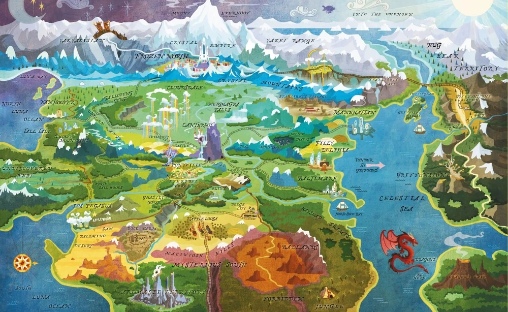

¿Que es Equestria?
El Reino de Equestria, o simplemente Equestria, es una nación constituyente ficticia, y el lugar principal donde se desarrolla el universo de My Little Pony: Friendship is Magic. Equestria es habitada por ponis mágicos y otras criaturas parlantes, como grifos y dragones. Equestria es referida como un reino en el primer episodio de la serie y en otros medios, aunque dentro de él se encuentran otros "reinos", como el Imperio de Cristal, por eso es mas eficiente pensarlo como un continente; la serie se desarrolla en varios puntos, y su soberanía en Equestria no es dejado en claro. Equestria es gobernada por la Princesa Celestia y la Princesa Luna, quienes residen en un palacio en Canterlot, aunque la autoridad e Celestia es mayor a la de Luna y es mejor reconocerla como "reina" Celestia, pero en esos tiempos las reinas eran vistas como villanas por culpa de disney, por lo que se decidio llamarla princesa.